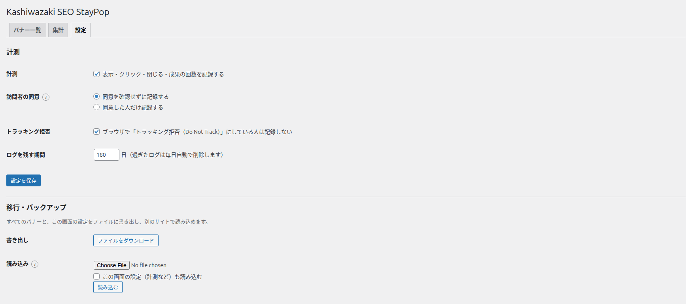
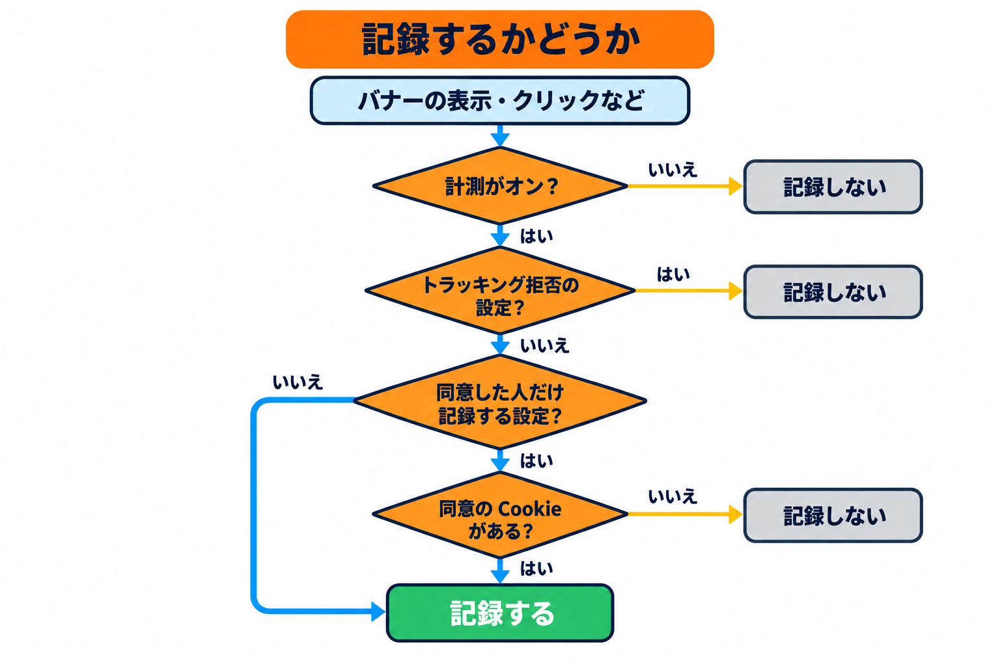
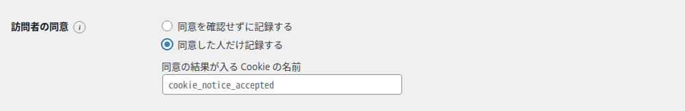
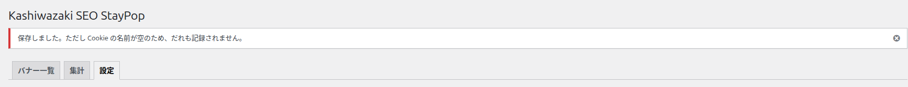
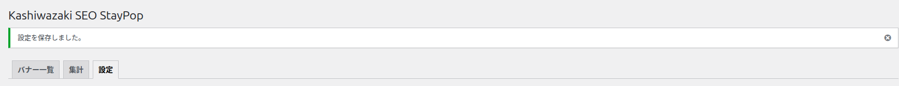
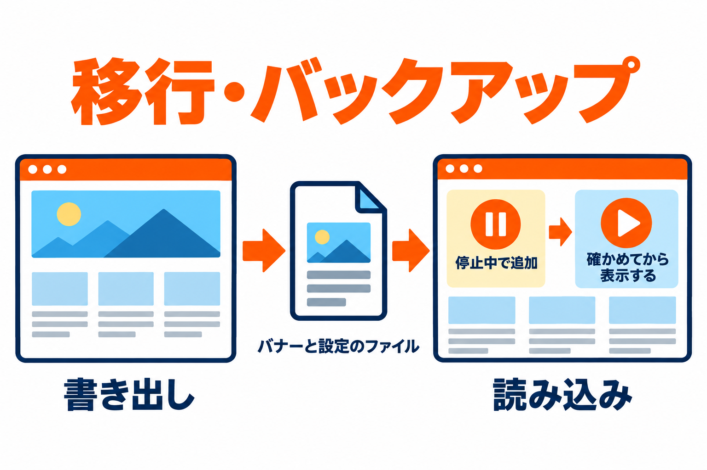
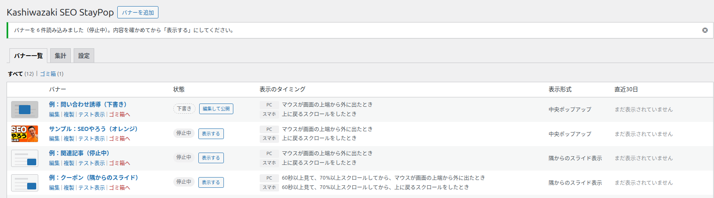

設定タブ
計測のオン・オフ、訪問者の同意の扱い、ログを残す期間と、バナーの書き出し・読み込みを行う画面です。管理者だけが使えます。

項目の一覧
| 項目 | 種類 | 初期値 | 入力できる範囲 |
|---|---|---|---|
| 計測 | チェックボックス | オン | - |
| 訪問者の同意 | ラジオボタン | 同意を確認せずに記録する | 2つの選択肢 |
| 同意の結果が入る Cookie の名前 | 文字 | 空 | 「同意した人だけ記録する」のとき表示 |
| トラッキング拒否 | チェックボックス | オン | - |
| ログを残す期間 | 数字（日） | 180 日 | 1〜3650 日 |
計測
「表示・クリック・閉じる・成果の回数を記録する」にチェックを入れると、集計のための記録をします。チェックを外すと記録をやめます（バナーの表示はそのまま続きます）。外している間は、集計タブの上に「いまは計測をしていません（「設定」タブで計測をオンにできます）。」と表示されます。
訪問者の同意

| 選択肢 | 記録する相手 |
|---|---|
| 同意を確認せずに記録する（初期値） | すべての訪問者を記録します（トラッキング拒否の人を除く）。 |
| 同意した人だけ記録する | Cookie の同意バナーで同意した人だけを記録します。下に「同意の結果が入る Cookie の名前」の欄が表示されます。 |

「同意した人だけ記録する」の使い方: Cookie の同意バナー（同意を求めるプラグインなど）を使っている場合に選び、その同意の結果が保存される Cookie の名前を入れます。名前は、お使いの同意ツールの説明書で確かめてください（例として欄に表示されている名前は、同意バナーのプラグイン「Cookie Notice」が使う名前です）。
- その Cookie の値が、空・
0・false・no・off・n・deny・denied・reject・rejected・decline・declined・null・undefinedのときは、同意していないものとして記録しません。それ以外の値なら記録します。 - 名前を空のまま保存すると、だれも記録されません。保存したときに「保存しました。ただし Cookie の名前が空のため、だれも記録されません。」と警告が表示されます。

表示する回数・閉じたあとの日数・成果のあとに表示しない設定・A/B テストのパターンを守るために、本プラグインは訪問者のブラウザに記録を残します。これは計測と同意の設定にかかわらず行います。サイトのプライバシーポリシーの見直しの参考にしてください。
トラッキング拒否
「ブラウザで「トラッキング拒否（Do Not Track）」にしている人は記録しない」にチェックを入れると（初期値）、ブラウザの設定でトラッキング拒否を有効にしている人を記録しません。
ログを残す期間
記録したログを残す日数です（1〜3650 日）。過ぎたログは毎日自動で削除します。集計で見られる期間は最長 90 日なので、それ以上残す必要がなければ短くしても構いません。
設定を保存
ここまでの項目は、「設定を保存」を押したときに保存されます。保存すると「設定を保存しました。」と表示されます。

移行・バックアップ
すべてのバナーと、この画面の設定をファイルに書き出し、別のサイトで読み込めます。サイトの引っ越しや、作ったバナーの控えに使います。

書き出し
「ファイルをダウンロード」を押します。
「kashiwazaki-seo-staypop-（年月日）.json」という名前のファイルがダウンロードされます。
- ファイルに入るのは、ゴミ箱以外のすべてのバナー（名前・公開しているかどうか・すべての設定）と、この画面の設定です。
- 集計のログは入りません。画像はファイルの中には入らず、画像の URL だけが入ります。
読み込み
「ファイルを選択」で、書き出したファイル（.json、5MB まで）を選びます。
この画面の設定も書き出し元と同じにしたいときは、「この画面の設定（計測など）も読み込む」にチェックを入れます。
「読み込む」を押します。バナー一覧に移り、「バナーを ○ 件読み込みました（停止中）。内容を確かめてから「表示する」にしてください。」と表示されます。
読み込んだバナーの内容を確かめ、一覧の「表示する」で表示を始めます。

| 項目 | 読み込んだバナーの扱い |
|---|---|
| 状態 | すべて停止中で追加します。書き出し元で公開していたものは公開（停止中）、それ以外は下書きになります。 |
| 今あるバナー | 消えません。同じファイルを2回読み込むと、同じバナーが2つずつになります。 |
| 画像 | 書き出し元のサイトの画像の URL をそのまま使います。書き出し元の画像を消すと表示されなくなるので、必要なら選び直してください。 |
| この画面の設定 | チェックを入れたときだけ、ファイルの内容で置き換えます。 |
「読み込めませんでした。このプラグインで書き出したファイルを選んでください。」と表示されたときは、選んだファイルがこのプラグインで書き出したものか、5MB 以下かを確かめてください。
プラグインを停止・削除したとき
| 操作 | 起きること |
|---|---|
| プラグインを無効化 | バナーの表示と、毎日のログの削除が止まります。バナー・設定・ログは残り、有効化し直すと元どおり使えます。 |
| プラグインを削除 | すべてのバナー・この画面の設定・集計のログを削除します。元に戻せないので、必要なら先に「書き出し」で控えを取ってください。 |